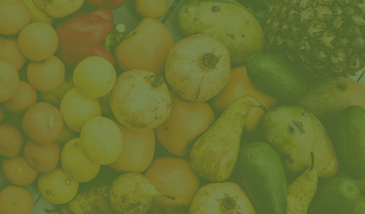
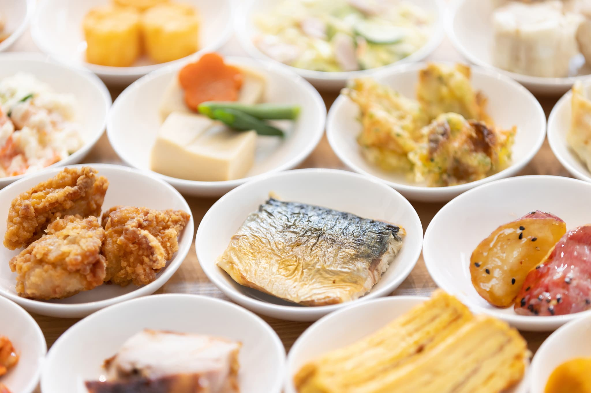
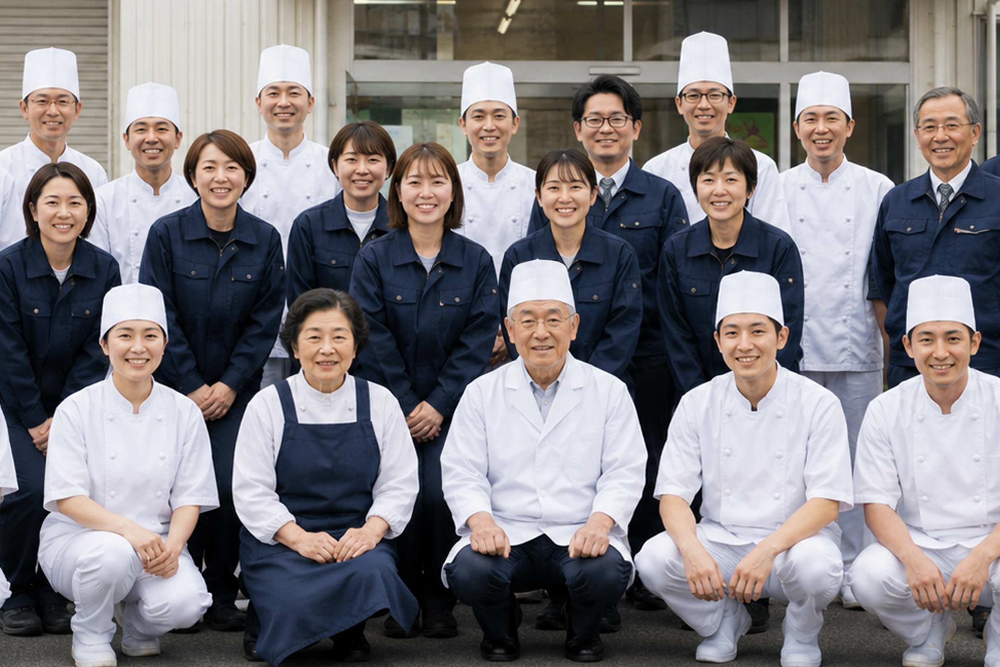

すべては、
お客様のご満足のために。

富士誠食は、オフィスや工場の社員食堂・カフェテリア・レストランなど、
さまざまな現場で、安心・安全な食事を提供しています。
日々の「食」を通して、働く人の健康と、企業の健康経営を支えています。
私たちについて
創業から60年以上。
安全・衛生の徹底管理から、現場改善、メニュー開発まで。
フードサービスの品質を支える取り組みを続けています。


採用情報
派手さはないけれど、毎日同じ人に「美味しい」と言ってもらえる仕事です。 経験者はもちろん、調理師免許を活かしきれていなかった方も歓迎します。
一人ひとりのペースに合わせて、無理なく長く働ける環境を整えています。